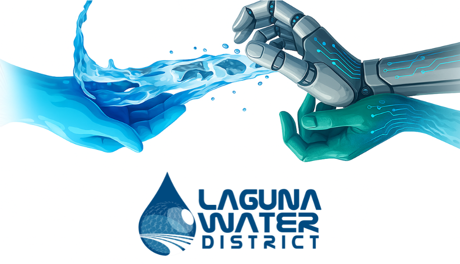
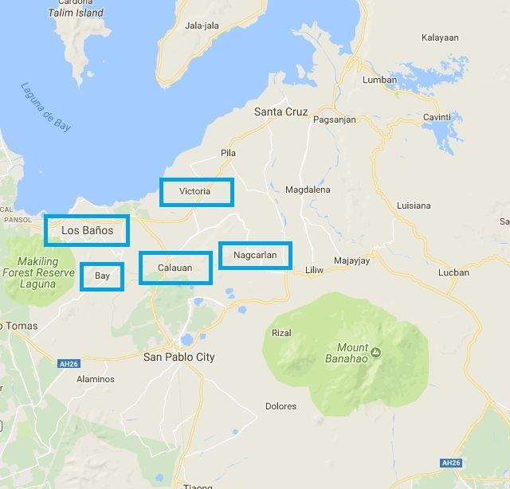
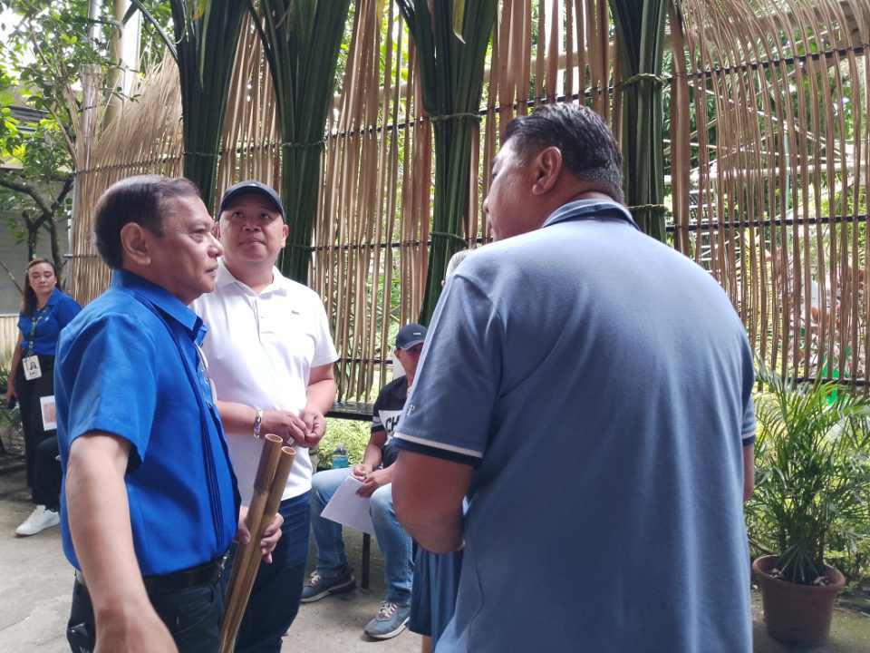
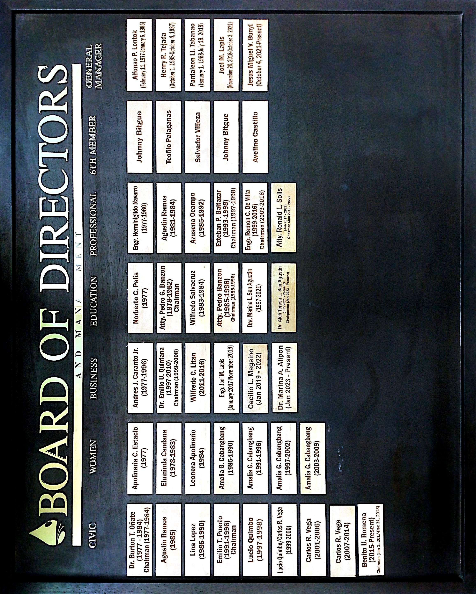

"History of Laguna Water District"
The Laguna Water District (LWD), It originated from the term called Los Baños Water District (LBWD) began as a municipal water provider before being transformed in 2016 under a joint venture (LARC) to improve operations across Los Baños, Bay, Calauan, and Victoria. Despite early challenges especially with arsenic contamination and service reliability ongoing LGU pressure, a shift in management to Manila Water Philippine Ventures in 2024, and major infrastructure investments have since driven improvements. This progress ultimately led to a wider scope of service and a rebranding into the Laguna Water District (LWD).
Coverage Territorial Scope

• Los Baños
• Bay
• Calauan
• Victoria
• Portions of Nagcarlan
Accomplishment of Laguna Water District
"Board of Director"
"Our Leader ship Member"

Engr. Joel M. Lapis
General Manager
"Our Offices"
"Service Award's"